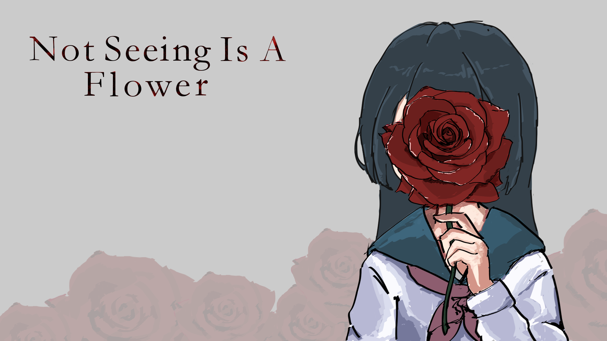

Not Seeing Is A Flower
A 2D platformer with visual novel elements. I scripted core gameplay systems, managed the team, and contributed title screen art.
View Project →I build interactive experiences — from platformer mechanics to background art. I care about how things feel to play, and how they look while doing it.
My name is Mark Yang. I'm a designer-developer with a passion for interactive media and game design. I enjoy working across the full creative process — scripting gameplay systems, designing levels, and creating the art that brings a world to life. Whether I'm building a 2D platformer in Unity or illustrating backgrounds for a visual novel, I approach every project with curiosity, iteration, and a deep respect for the player's experience. I'm drawn to work where technical skill and creative thinking are equally valued.

A 2D platformer with visual novel elements. I scripted core gameplay systems, managed the team, and contributed title screen art.
View Project →A visual novel co-written and directed by me. I handled all background art and helped shape the story's emotional arc.
View Project →